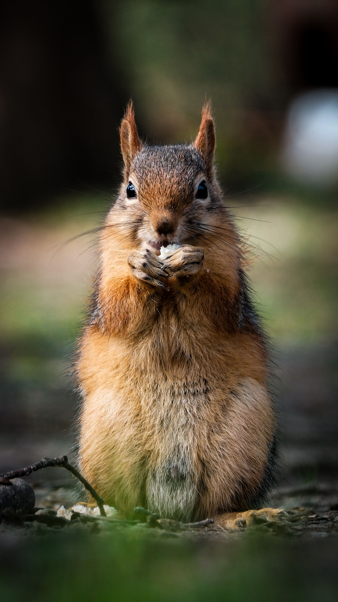
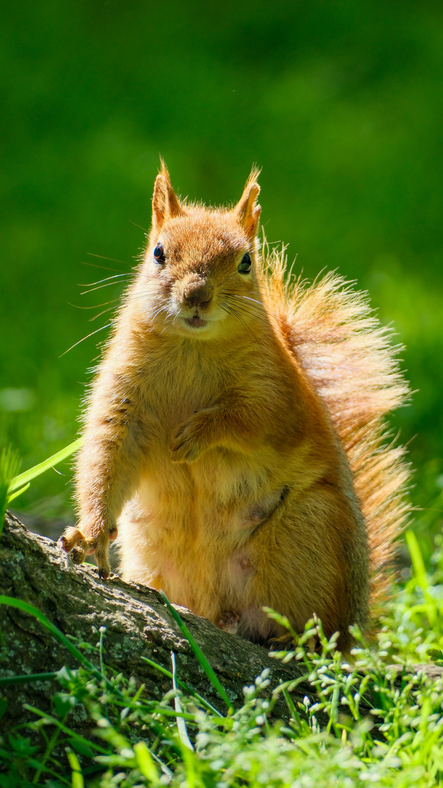
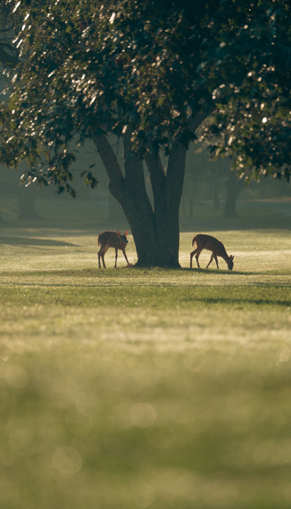

Os animais sao seres vivos muito importantes para a natureza e para o equilibrio do meio ambiente. Existem muitos
tipos de animais, como os mamiferos, as aves, os peixes, os repteis e os anfibios. Cada um deles possui
caracteristicas diferentes e vive em determinados lugares, como florestas, oceanos, rios e campos. Alguns
animais sao domesticos, como caes e gatos, enquanto outros vivem na natureza, como leoes, girafas e elefantes.
E muito importante cuidar e respeitar todos os animais, pois eles fazem parte da vida no planeta. Devemos
oferecer carinho e protecao aos animais domesticos e preservar os habitats dos animais selvagens. Tambem
precisamos evitar a poluicao e o desmatamento, que prejudicam muitas especies. Proteger os animais e uma forma
de cuidar da natureza e garantir que as futuras geracoes tambem possam conhecer a grande diversidade de seres
vivos que existe no mundo.